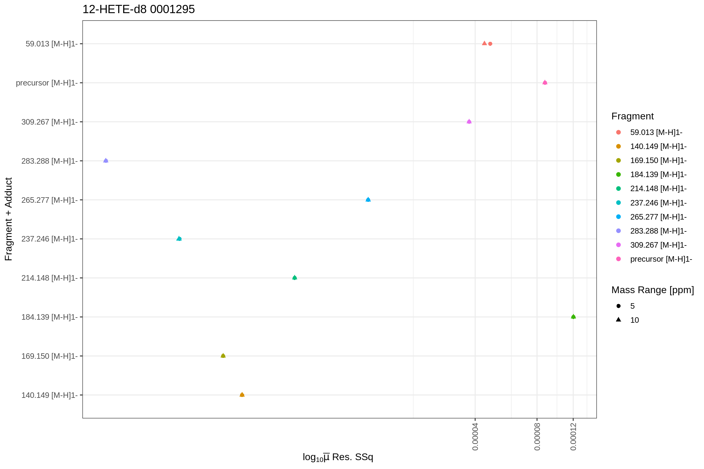

introduction.RmdThe following example shows, how to train and automatically select nonlinear models for the mediator 12-HETE (in this case the +D8, heavy labeled variant). The necessary data is available within this R package directly.
First, load the flipr library and import a feature table:
library("flipr")
xics_file <- system.file("testdata", "12-HETE-d8-_M-H_1--qex_fip.tsv", package = "flipr", mustWork = TRUE)The feature table *-fip.tsv is created by the transition extraction step (see below) and serves as the main data input for flipR- It holds one m/z feature per row, with the following columns, specifying its provenance, parameters and information that is used by downstream steps to maintain a mapping between input transition list and output parameter file for LipidCreator- The following columns are reported in the output file (some correspond to *.mzML elements / attributes, some come from LipidCreator / Skyline):
You can have multiple, fragment-specific models fitted through the data present in the fip file, distinguished by instrument, origin, polarity, species, precursorAdduct, fragment and adduct.
Within the next step, we will load a default configuration for this example. This file defines the parameter search ranges used for the optimization of the individual fragment models. If you source it, it will create lower and upper, which define the global search range for each parameter, and start_lower and start_upper within the local environment, which define where the optimization should start for each parameter.
The next step fits the actual fragment specific models with different parameterizations within the previously defined ranges, but omits creating QC data plots before the fit training:
fits <- flip(projectDir = dirname(xics_file), plotFormat = "png", filePattern = basename(xics_file), trainModel = TRUE, dataPlots = FALSE, start_lower = start_lower, start_upper = start_upper, lower = lower, upper = upper)The returned fits list contains the tidied model details (post-processed with the broom library). The following tibble contains the nested models, their data, and other diagnostic information:
head(fits[[1]]$fits$QExHF03_NM_0001295.mzML$fitResults$NEGATIVE$fits$fits)
#> # A tibble: 6 x 9
#> # Groups: combinationId [6]
#> combinationId data fit fitFun info params CI preds_from_data new_preds
#> <chr> <lis> <lis> <chr> <lis> <list> <lis> <list> <list>
#> 1 12-HETE-d8|[M… <tib… <nls> dlnor… <tib… <tibb… <df[… <tibble [723 ×… <tibble …
#> 2 12-HETE-d8|[M… <tib… <nls> dlnor… <tib… <tibb… <df[… <tibble [723 ×… <tibble …
#> 3 12-HETE-d8|[M… <tib… <nls> dlnor… <tib… <tibb… <df[… <tibble [732 ×… <tibble …
#> 4 12-HETE-d8|[M… <tib… <nls> dlnor… <tib… <tibb… <df[… <tibble [732 ×… <tibble …
#> 5 12-HETE-d8|[M… <tib… <nls> dlnor… <tib… <tibb… <df[… <tibble [732 ×… <tibble …
#> 6 12-HETE-d8|[M… <tib… <nls> dlnor… <tib… <tibb… <df[… <tibble [732 ×… <tibble …The fitinfo tibble contains the tidied model performance figures, such as whether the model has converged, the final selected AIC and BIC values, etc.:
head(fits[[1]]$fits$QExHF03_NM_0001295.mzML$fitResults$NEGATIVE$fits$fitinfo)
#> # A tibble: 6 x 10
#> # Groups: combinationId [6]
#> combinationId fitFun sigma isConv finTol logLik AIC BIC deviance
#> <chr> <chr> <dbl> <lgl> <dbl> <dbl> <dbl> <dbl> <dbl>
#> 1 12-HETE-d8|[… dlnor… 0.00171 TRUE 1.49e-8 3581. -7153. -7130. 0.00211
#> 2 12-HETE-d8|[… dlnor… 0.00171 TRUE 1.49e-8 3581. -7153. -7130. 0.00211
#> 3 12-HETE-d8|[… dlnor… 0.00154 TRUE 1.49e-8 3704. -7397. -7374. 0.00173
#> 4 12-HETE-d8|[… dlnor… 0.00154 TRUE 1.49e-8 3704. -7397. -7374. 0.00173
#> 5 12-HETE-d8|[… dlnor… 0.0110 TRUE 1.49e-8 2267. -4524. -4501. 0.0875
#> 6 12-HETE-d8|[… dlnor… 0.0110 TRUE 1.49e-8 2267. -4524. -4501. 0.0875
#> # … with 1 more variable: df.residual <int>The preds and predsFromData are tibbles with predicted values calculated from the fitted models on a custom generated CE grid, and predicted values based on the CE values contained in the original training data.
head(fits[[1]]$fits$QExHF03_NM_0001295.mzML$fitResults$NEGATIVE$fits$preds)
#> # A tibble: 6 x 5
#> combinationId precursorCollisio… scanRelativeInte… min_pce max_pce
#> <chr> <dbl> <dbl> <dbl> <dbl>
#> 1 12-HETE-d8|[M-H]1-|140.1… 10 0.00166 9 61
#> 2 12-HETE-d8|[M-H]1-|140.1… 11 0.00221 9 61
#> 3 12-HETE-d8|[M-H]1-|140.1… 12 0.00290 9 61
#> 4 12-HETE-d8|[M-H]1-|140.1… 13 0.00374 9 61
#> 5 12-HETE-d8|[M-H]1-|140.1… 14 0.00478 9 61
#> 6 12-HETE-d8|[M-H]1-|140.1… 15 0.00601 9 61Predictions from data:
head(fits[[1]]$fits$QExHF03_NM_0001295.mzML$fitResults$NEGATIVE$fits$preds_from_data)
#> # A tibble: 6 x 9
#> combinationId scanRelativeInt… precursorCollis… X.weights. .fitted .resid
#> <chr> <dbl> <dbl> <dbl> <dbl> <dbl>
#> 1 12-HETE-d8|[… 0.00638 10 1 0.00166 4.72e-3
#> 2 12-HETE-d8|[… 0.00595 11 1 0.00221 3.74e-3
#> 3 12-HETE-d8|[… 0.00517 12 1 0.00290 2.28e-3
#> 4 12-HETE-d8|[… 0.00466 13 1 0.00374 9.12e-4
#> 5 12-HETE-d8|[… 0.00549 14 1 0.00478 7.10e-4
#> 6 12-HETE-d8|[… 0.00605 15 1 0.00601 4.01e-5
#> # … with 3 more variables: .std.resid <dbl>, .m.resid <dbl>, .sd.resid <dbl>The fit params object contains, for each of the fragments and ppm extraction windows, the term, estimate, p-values, confidence intervals and more.
head(fits[[1]]$fits$QExHF03_NM_0001295.mzML$fitResults$NEGATIVE$fits$params)
#> combinationId term
#> 1 12-HETE-d8|[M-H]1-|140.149|[M-H]1-|(-)|140.1493|10|0001295 meanlog
#> 2 12-HETE-d8|[M-H]1-|140.149|[M-H]1-|(-)|140.1493|10|0001295 scale
#> 3 12-HETE-d8|[M-H]1-|140.149|[M-H]1-|(-)|140.1493|10|0001295 sdlog
#> 4 12-HETE-d8|[M-H]1-|140.149|[M-H]1-|(-)|140.1493|10|0001295 shift
#> 5 12-HETE-d8|[M-H]1-|140.149|[M-H]1-|(-)|140.1493|5|0001295 meanlog
#> 6 12-HETE-d8|[M-H]1-|140.149|[M-H]1-|(-)|140.1493|5|0001295 scale
#> estimate std.error statistic p.value fitFun conf.low
#> 1 5.34767769 0.118155376 45.259707 1.274671e-212 dlnormPar 5.11570692
#> 2 1.22461039 0.003663803 334.245667 0.000000e+00 dlnormPar 1.21741736
#> 3 0.04813141 0.005743771 8.379759 2.780244e-16 dlnormPar 0.03685485
#> 4 175.00776923 24.845787988 7.043760 4.384673e-12 dlnormPar 126.22880749
#> 5 5.34767780 0.118155386 45.259704 1.274718e-212 dlnormPar 5.11570701
#> 6 1.22461039 0.003663801 334.245917 0.000000e+00 dlnormPar 1.21741737
#> conf.high
#> 1 5.57964846
#> 2 1.23180343
#> 3 0.05940798
#> 4 223.78673096
#> 5 5.57964859
#> 6 1.23180342The returned fits list also contains plots for the predicted fits and the actual fit data in tidy format (post-processed with the broom library). Since the fip file links its features back to the original MS file (mzML), the results can be accessed by using the MS file’s name as key. To allow fits from the same source file in positive and negative mode, a separate level is included (NEGATIVE and/or POSITIVE) to unambiguously identify the fit results and plots:
For the residuals:
For the quantile-quantile plot with standardized residuals:
For the Mean Sum-of-Squared residuals:

The number of total training samples (over all CE steps) for each combination id (fragment + adduct):
And for the parameter confidence intervals:
The flip function can be called with the dataPlots = TRUE option in order to generate QC plots based on the fip files:
fits2 <- flip(projectDir = dirname(xics_file), plotFormat = "png", filePattern = basename(xics_file), trainModel = FALSE, dataPlots = TRUE)
#> Project dir is /home/travis/R/Library/flipr/testdata
#> Creating plots for file /home/travis/R/Library/flipr/testdata/12-HETE-d8-_M-H_1--qex_fip.tsv
#> Filtering 13259 rows with precursorCollisionEnergy >= 0
#> 13259 rows retained after filter!
#> Split data into 1 partitions with levels QExHF03_NM_0001295.mzML
#> Processing data from QExHF03_NM_0001295.mzML
#> Using Fragment+Adduct levels 59.013 [M-H]1- | 140.149 [M-H]1- | 169.150 [M-H]1- | 184.139 [M-H]1- | 214.148 [M-H]1- | 237.246 [M-H]1- | 265.277 [M-H]1- | 283.288 [M-H]1- | 309.267 [M-H]1- | precursor [M-H]1-
#> Writing to file 12-HETE-d8-_M-H_1--qex_fip-1-of-1
#> fragment-ppm-boxplot
#> precursorCollisionEnergy-vs-foundIntensity
#> precursorCollisionEnergy-vs-foundIntensity-scan-relative-normalized
#> Warning: Removed 13259 rows containing missing values (geom_point).
#> Warning: Removed 70 rows containing missing values (geom_smooth).
#> precursorCollisionEnergy-vs-foundIntensity-scan-relative-normalized-overlay
#> precursorCollisionEnergy-vs-mass-error-ppm
#> m/z density distribution
#> m/z-vs-mass-error-ppm
#> foundIntensity-scan-relative-normalized-histogram
#> Warning: Removed 40 rows containing missing values (geom_bar).
#> Skipping training of models. Set argument 'trainModel=TRUE' to create!This plot shows the correlation between the raw integrated ions of each MS2 scan vs the total ion current, as given by the msconvert tool within the scan’s header. These values can differ and this plot is used to check for linearity between both values.
This plot shows the absolute fragment ion intensities over the collision energy range. Overlaid is a LOESS local regression line to highlight trends in the fragmentation behaviour.
This plots shows the fragment ion intensities over the collision energy range, normalized to the total intensity of the MS2 scan. Overlaid is a LOESS local regression line to highlight trends in the fragmentation behaviour.
fits2[[1]]$fits$QExHF03_NM_0001295.mzML$dataPlots$NEGATIVE$precCollEnergyVsScanRelativeIntensityNormalized
#> Warning: Removed 13259 rows containing missing values (geom_point).
#> Warning: Removed 70 rows containing missing values (geom_smooth).This plot shows an overlay of all individual fragment traces over the collision energy range. It is helpful to spot ionization or spray issues which would be clearly visible due to dips in the areas.
The precursor collision energy versus mass error in PPM plot shows the mass error on the vertical axis, depending on the collision energy on the horizontal axis.
The mass density distribution plot shows all detected and extracted fragments and visualizes the mass deviation density on the horizontal axis.
The following plot shows a summary of the extracted data-points and their deviation from the calculated m/z for each fragment, depending on the defined PPM extraction window and the targeted m/z value:
Please consult the interactive tutorials within LipidCreator, the LipidCreator documentation and workshop materials at https://lifs.isas.de/lipidcreator for details on creating transition lists.
Please note that at the moment, flipR only supports fragmentation patterns of lipid mediators. It may work for other lipid classes, but may not achieve the same performance as for the mediators.
We used a step size of 1 between collision energies (eV for CID with QTOF, NCE for HCD with Thermo QExHF) and repeated fragmentation of each precursor, adapted to the capabilities of the MS platform (more repetitions on QEX vs. fewer repetitions on QTOF).
We used msConvert to convert the raw MS data for different vendor platforms into mzML, using centroiding and vendor peak picking, as well as 64 bit encoding precision.
The transition extractor is a Java-based tool that reads an mzML file and extracts the MS2 spectra data matching a given transition list. We use LipidCreator to create such a transition list, but in general, any tool could be used that sticks to the general LipidCreator transition list format. Please note that LipidCreator transition lists need to be created in dev mode (starting LipidCreator with a dev argument) in order to generate special markings for heavy labeled precursors. Ultimately, the flipr-transition-extractor also runs flipR as a local process. Please see the respective installation instructions. A ready to run version is included in the flipr-trainer.
The comma-separated lipid creator parameter file contains collision energy calculation parameters for each lipid class, as reported and concatenated by flipR- There are as many rows for each fragment, as there are parameters- The following columns are required in this file: - instrument the PSI-MS CV term id identifying the instrument, e.g- MS:1002523 for Thermo Scientific Q Exactive HF. - class the lipid class, e.g- 10-HDoHE, needs to be double quoted, when the name contains a comma. - adduct the precursor adduct for this lipid class, e.g- [M-H]1-. - fragment the fragment identifier- If no common name is available, use e.g- “m/z 121.0658”- The precursor must be reported as “precursor”. - ParKey the model parameter name, currently one of “model”, “meanlog”, “sdlog”, “scale”, and “shift”. - ParValue the model parameter values, currently, for “model” only “dlnormPar” is recognized- Other parameters are expected to be reported as double numbers with a “.” as the decimal separator.
To use this table in LipidCreator, place it in the data/ce-parameters directory of LipidCreator. The name should correspond to the platform’s CV term id. For the QEx-HF, the name should be MS_1002523.csv. Additionally, you need to register an MS platform in the data/ms-instruments.csv file. Each line contains the settings for a particular MS platform, as identified by its respective PSI-MS cv term id. The line for the QEx HF platform looks as follows:
MS:1002523,Thermo Scientific Q Exactive HF,10,60,Normalized Collision Energy,PRMIt defines the devices PSI-MS term id, a cleartext name, the minimum collision energy value for CE energy and relative fragment intensity prediction, the maximum collision energy value, the collision energy unit, and the assay generation mode, for which the CE optimization should be used (here: PRM).